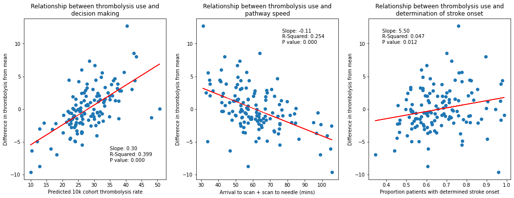

How much of the inter-hospital variation in thrombolysis use do in-hospital processes explain
Contents
How much of the inter-hospital variation in thrombolysis use do in-hospital processes explain¶
Aims:
Investigate the correlation (explained variance) between hospital model process parameters and the variation in use of thrombolysis between hospitals.
Load data and pivot by scenario¶
import matplotlib.pyplot as plt
import numpy as np
import pandas as pd
# Load data
scenarios = pd.read_csv('output/key_scenario_results.csv')
# Performance data
performance = pd.read_csv(
'hosp_performance_output/hospital_performance.csv', index_col='stroke_team')
performance['hosp_speed'] = (
np.exp(performance['arrival_scan_arrival_mins_mu']) +
np.exp(performance['scan_needle_mins_mu']))
# Decision data
decision = pd.read_csv(
'../random_forest/predictions/corhort_rates.csv', index_col='hospital')
scenarios.head()
| stroke_team | scenario | admissions | thrombolysis_rate | additional_good_outcomes_per_1000_patients | patients_receiving_thrombolysis | add_good_outcomes | |
|---|---|---|---|---|---|---|---|
| 0 | AGNOF1041H | base | 671.666667 | 15.11 | 12.72 | 101.488833 | 8.543600 |
| 1 | AKCGO9726K | base | 1143.333333 | 15.06 | 13.43 | 172.186000 | 15.354967 |
| 2 | AOBTM3098N | base | 500.666667 | 7.81 | 5.74 | 39.102067 | 2.873827 |
| 3 | APXEE8191H | base | 439.333333 | 10.08 | 7.35 | 44.284800 | 3.229100 |
| 4 | ATDID5461S | base | 275.666667 | 9.20 | 6.42 | 25.361333 | 1.769780 |
performance.head()
| thrombolysis_rate | admissions | 80_plus | onset_known | known_arrival_within_4hrs | onset_arrival_mins_mu | onset_arrival_mins_sigma | scan_within_4_hrs | arrival_scan_arrival_mins_mu | arrival_scan_arrival_mins_sigma | onset_scan_4_hrs | eligable | scan_needle_mins_mu | scan_needle_mins_sigma | hosp_speed | |
|---|---|---|---|---|---|---|---|---|---|---|---|---|---|---|---|
| stroke_team | |||||||||||||||
| AGNOF1041H | 0.154839 | 671.666667 | 0.425459 | 0.635236 | 0.681250 | 4.576874 | 0.557598 | 0.965596 | 1.665700 | 1.497966 | 0.935867 | 0.388325 | 3.669602 | 0.664462 | 44.525658 |
| AKCGO9726K | 0.158892 | 1143.333333 | 0.395658 | 0.970845 | 0.428829 | 4.625486 | 0.597451 | 0.955882 | 2.834183 | 0.999719 | 0.908425 | 0.419355 | 2.904479 | 0.874818 | 35.272215 |
| AOBTM3098N | 0.085885 | 500.666667 | 0.485470 | 0.619174 | 0.629032 | 4.603918 | 0.584882 | 0.935043 | 3.471419 | 1.254744 | 0.846435 | 0.267819 | 3.694918 | 0.518929 | 72.424682 |
| APXEE8191H | 0.098634 | 439.333333 | 0.515679 | 0.716237 | 0.608051 | 4.590357 | 0.496452 | 0.966899 | 3.312930 | 0.714465 | 0.904505 | 0.258964 | 3.585094 | 0.751204 | 63.522230 |
| ATDID5461S | 0.090689 | 275.666667 | 0.533546 | 0.573156 | 0.660338 | 4.427826 | 0.591373 | 0.878594 | 4.125690 | 0.549301 | 0.865455 | 0.315126 | 3.497262 | 0.608126 | 94.935429 |
rx = scenarios.pivot(
index='stroke_team', columns='scenario', values='thrombolysis_rate')
rx = rx.merge(performance[['hosp_speed', 'onset_known']], left_index=True, right_index=True)
rx = rx.merge(decision['cohort_rate'], left_index=True, right_index=True)
rx.head()
| base | benchmark | onset | onset_benchmark | same_patient_characteristics | speed | speed_benchmark | speed_onset | speed_onset_benchmark | hosp_speed | onset_known | cohort_rate | |
|---|---|---|---|---|---|---|---|---|---|---|---|---|
| AGNOF1041H | 15.11 | 20.38 | 18.17 | 24.09 | 11.04 | 15.21 | 20.14 | 17.89 | 23.90 | 44.525658 | 0.635236 | 27.76 |
| AKCGO9726K | 15.06 | 14.18 | 14.92 | 14.27 | 22.22 | 15.32 | 14.69 | 15.36 | 14.83 | 35.272215 | 0.970845 | 37.45 |
| AOBTM3098N | 7.81 | 11.88 | 9.39 | 14.52 | 8.74 | 9.39 | 13.78 | 11.40 | 17.17 | 72.424682 | 0.619174 | 26.00 |
| APXEE8191H | 10.08 | 13.06 | 10.76 | 13.35 | 13.24 | 10.15 | 12.80 | 10.90 | 13.54 | 63.522230 | 0.716237 | 29.97 |
| ATDID5461S | 9.20 | 9.92 | 11.81 | 13.35 | 7.60 | 11.10 | 11.79 | 14.64 | 15.95 | 94.935429 | 0.573156 | 25.92 |
Calculate difference between each hospital’s thrombolysis rate and the mean thrombolysis¶
mean_rx = rx['base'].mean()
print (f'Mean thrombolysis: {mean_rx:0.2f}')
rx['diff_from_mean'] = rx['base'] - mean_rx
Mean thrombolysis: 11.22
rx.head()
| base | benchmark | onset | onset_benchmark | same_patient_characteristics | speed | speed_benchmark | speed_onset | speed_onset_benchmark | hosp_speed | onset_known | cohort_rate | diff_from_mean | |
|---|---|---|---|---|---|---|---|---|---|---|---|---|---|
| AGNOF1041H | 15.11 | 20.38 | 18.17 | 24.09 | 11.04 | 15.21 | 20.14 | 17.89 | 23.90 | 44.525658 | 0.635236 | 27.76 | 3.889545 |
| AKCGO9726K | 15.06 | 14.18 | 14.92 | 14.27 | 22.22 | 15.32 | 14.69 | 15.36 | 14.83 | 35.272215 | 0.970845 | 37.45 | 3.839545 |
| AOBTM3098N | 7.81 | 11.88 | 9.39 | 14.52 | 8.74 | 9.39 | 13.78 | 11.40 | 17.17 | 72.424682 | 0.619174 | 26.00 | -3.410455 |
| APXEE8191H | 10.08 | 13.06 | 10.76 | 13.35 | 13.24 | 10.15 | 12.80 | 10.90 | 13.54 | 63.522230 | 0.716237 | 29.97 | -1.140455 |
| ATDID5461S | 9.20 | 9.92 | 11.81 | 13.35 | 7.60 | 11.10 | 11.79 | 14.64 | 15.95 | 94.935429 | 0.573156 | 25.92 | -2.020455 |
How much variation is explained by differences in decision making?¶
diff_explained_by_decison_making = (np.corrcoef(
rx['cohort_rate'], rx['diff_from_mean'])[1,0]) ** 2
print(f'{diff_explained_by_decison_making:0.3}')
0.399
How much variation is explained by differences in speed?¶
diff_explained_by_speed = (np.corrcoef(
rx['diff_from_mean'], rx['hosp_speed'])[1,0]) ** 2
print(f'{diff_explained_by_speed:0.3}')
0.254
How much variation is explained by determination of stroke onset time?¶
diff_explained_by_determination_of_onset = (np.corrcoef(
rx['diff_from_mean'], rx['onset_known'])[1,0]) ** 2
print(f'{diff_explained_by_determination_of_onset:0.3}')
0.0474
Plot relationships¶
from scipy import stats
fig = plt.figure(figsize=(15,6))
ax1 = fig.add_subplot(131)
x = rx['cohort_rate']
y = rx['diff_from_mean']
gradient, intercept, r_value, p_value, std_err = stats.linregress(x,y)
y_fit=intercept + (x*gradient)
plt.plot(x, y, 'o', label='original data')
plt.plot(x, y_fit, 'r', label='fitted line')
text='Slope: %.2f\nR-Squared: %.3f\nP value: %.3f' %(gradient,r_value**2,p_value)
plt.text(35, -8, text)
ax1.set_title('Relationship between thrombolysis use and\ndecision making')
ax1.set_xlabel('Predicted 10k cohort thrombolysis rate')
ax1.set_ylabel('Difference in thrombolysis from mean')
ax2 = fig.add_subplot(132)
x = rx['hosp_speed']
y = rx['diff_from_mean']
gradient, intercept, r_value, p_value, std_err = stats.linregress(x,y)
y_fit=intercept + (x*gradient)
plt.plot(x, y, 'o', label='original data')
plt.plot(x, y_fit, 'r', label='fitted line')
text='Slope: %.2f\nR-Squared: %.3f\nP value: %.3f' %(gradient,r_value**2,p_value)
plt.text(77, 10, text)
ax2.set_title('Relationship between thrombolysis use and\npathway speed')
ax2.set_xlabel('Arrival to scan + scan to needle (mins)')
ax2.set_ylabel('Difference in thrombolysis from mean')
ax3 = fig.add_subplot(133)
x = rx['onset_known']
y = rx['diff_from_mean']
gradient, intercept, r_value, p_value, std_err = stats.linregress(x,y)
y_fit=intercept + (x*gradient)
plt.plot(x, y, 'o', label='original data')
plt.plot(x, y_fit, 'r', label='fitted line')
text='Slope: %.2f\nR-Squared: %.3f\nP value: %.3f' %(gradient,r_value**2,p_value)
plt.text(0.38,10, text)
ax3.set_title('Relationship between thrombolysis use and\ndetermination of stroke onset')
ax3.set_xlabel('Proportion patients with determined stroke onset')
ax3.set_ylabel('Difference in thrombolysis from mean')
plt.tight_layout(pad=2)
plt.savefig('./output/model_correlations.jpg', dpi=300)
plt.show()

Conclusions¶
In-hospital process parameters partly explain the inter-hospital variation in thrombolysis use.
The strongest relationship is between decision-making, as described by the predicted thrombolysis use of a standard 10k cohort of patients, with R-square of 0.40.
Pathway speed is the next strongest predictor of thrombolysis use, with an R-square of 0.25.
Determination of stroke onset time is the weakest predictor of thrombolysis use (R-square of 0.05), but is still statistically significant (p=0.012)